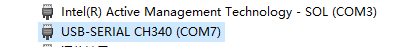
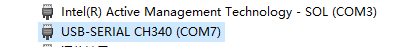
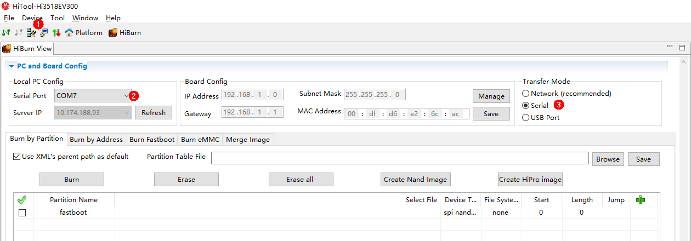
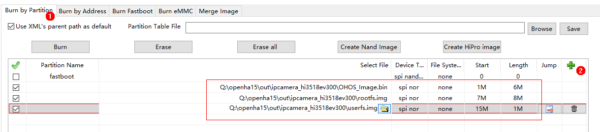
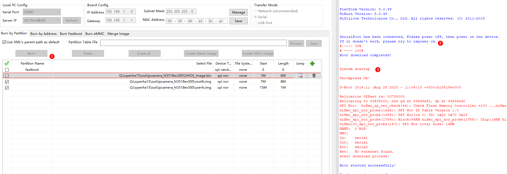
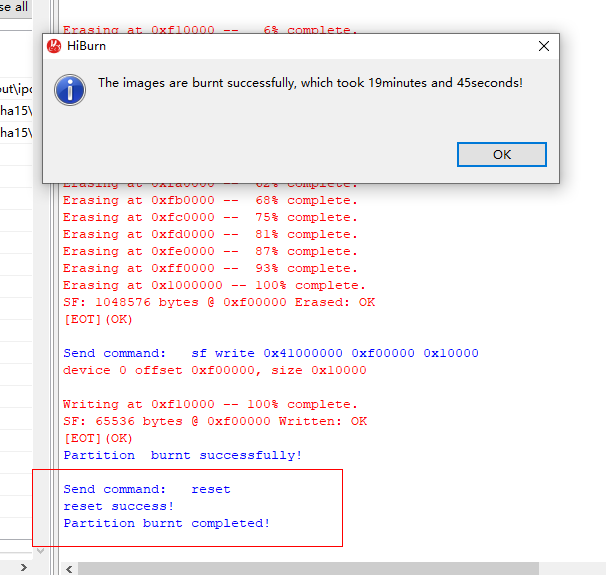
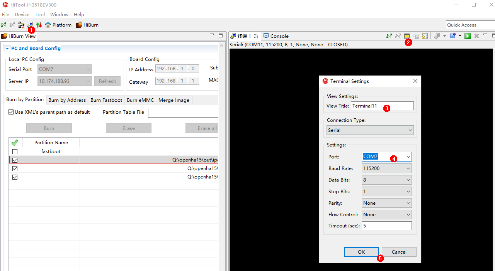
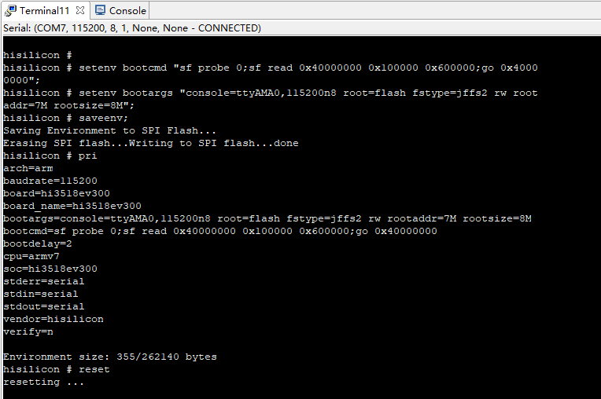
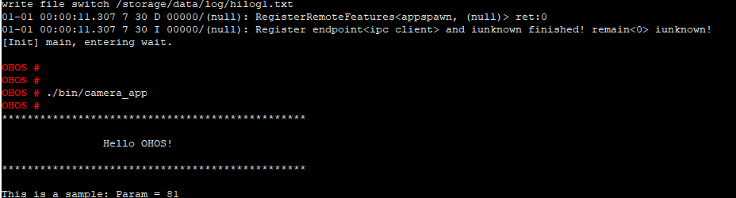

Developing the First Example Program running on Hi3518¶
This section describes how to modify, compile, burn, and run the first program on the board, and finally print Hello OHOS!.
Acquiring Source Code¶
You need to acquire Hi3518 source code and download it on a Linux server. For details, see Source Code Acquisition.
Modifying a Program¶
The following example shows the helloworld.c code in the applications/sample/camera/app/src directory. You can customize the content to be printed. For example, you can change OHOS to World. You can use either ISO C or C++ to develop a program.
#include <stdio.h>
#include "los_sample.h"
int main(int argc, char **argv)
{
printf("\n************************************************\n");
printf("\n\t\tHello OHOS!\n");
printf("\n************************************************\n\n");
LOS_Sample(g_num);
return 0;
}
Compiling Code¶
On the Linux server, access the root directory of the source code package and run the following script to compile the source code package. The result files are generated in the out/ipcamera_hi3518ev300 directory.
Hi3518EV300
python build.py ipcamera_hi3518ev300 -b debug
Burning Images¶
Burn images to the Hi3518EV300 board over the serial port.
Connect a serial cable (USB port) of the board to the Windows host and start Device Manager to check whether the serial port number is COM7.
 NOTICE: To update the USB-to-Serial driver, you need
to start Device Manager, right-click the device, and choose
Update Driver Software > Search automatically for updated
driver software.Figure 1 Successful driver installation
NOTICE: To update the USB-to-Serial driver, you need
to start Device Manager, right-click the device, and choose
Update Driver Software > Search automatically for updated
driver software.Figure 1 Successful driver installationStart the HiTool, select the Hi3518EV300 chip, select COM7 for Local PC Config, and select Serial for Transfer Mode.
Figure 2 Configuring the serial port on HiToolBurn the newly compiled OHOS_Image.bin file, rootfs.img, and userfs.img files to the board. Ensure the file path, flash type, burning start address, and burning length are correct. Modify relevant parameters based on the file size. The value is rounded up, in MB.
Figure 3 Burning images using HiToolClick Burn and power on the board as required. (If the board is powered on, power it off and then power it on.)
Figure 4Click OK.
Figure 5 Successful burning
Running an Image¶
Connect to the serial port. After the images are burnt successfully, start the terminal, click Settings, set View Title to Terminal 11 and Port to COM7, and click OK to open the serial port. You have logged in to the U-boot if hisilicon # is displayed.
Figure 6 Serial port connection(Mandatory for the first burning) Modify the bootcmd and bootargs parameters of U-boot. This step is a fixed operation and the result can be saved. However, you need to perform the following steps again if U-boot needs to be reburnt.
Table 1 Parameters of the U-boot
Command
Description
setenv bootcmd “sf probe 0;sf read 0x40000000 0x100000 0x600000;go 0x40000000”;
Run this command to set the content of bootcmd. Select the flash whose number is 0, and read content that has a size of 0x600000 and a start address of 0x100000 to memory address 0x40000000.
setenv bootargs “console=ttyAMA0,115200n8 root=flash fstype=jffs2 rw rootaddr=7 M rootsize=8 M”;
In this command, bootargs is set to the serial port output, the baud rate is 115200, the data bit is 8, and the rootfs is mounted to the flash memory. The file system type is set to jffs2 rw, which provides the read-write attribute for the JFFS2 file system. rootaddr=7 M rootsize=8 M indicates the actual start address and length of the rootfs.img file to be burnt, respectively. The size must be the same as that of the compiled files in the HiTool.
saveenv
saveenv means to save the current configuration.
reset
reset means to reset the board.
pri
pri means to view the displayed parameters.
NOTICE: go 0x40000000 (optional) indicates that
the command is fixed in the startup parameters by default and the
board automatically starts after it is reset. If you want to
manually start the board, press Enter in the countdown phase
of the U-boot startup to interrupt the automatic startup.Figure 7 Startup parameter settingsIf hisilicon # is displayed during the startup, run the reset command. After the system automatically starts and OHOS is displayed, run the ./bin/camera_app command and then press Enter. The system is started successfully if information shown in the following figure is displayed.
Figure 8 Successful system startup and program execution
Follow-up Learning¶
Congratulations! You have finished all steps! You are advised to go on learning how to develop Cameras with a Screen.